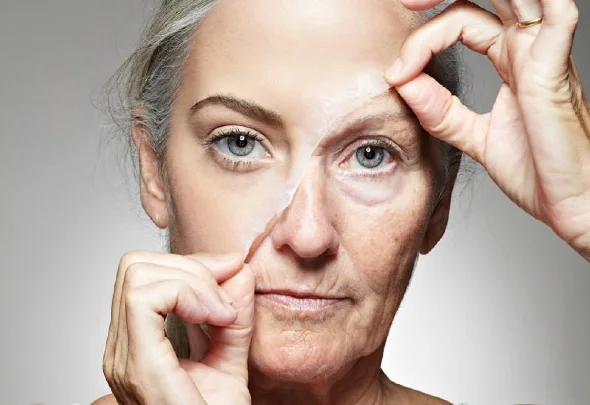
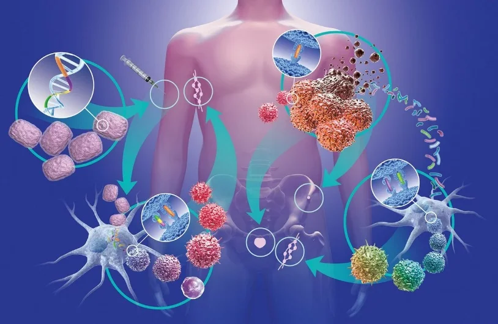
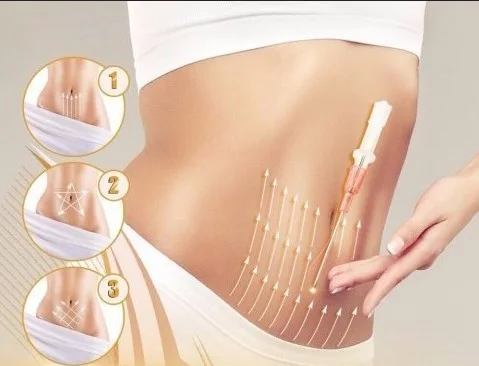
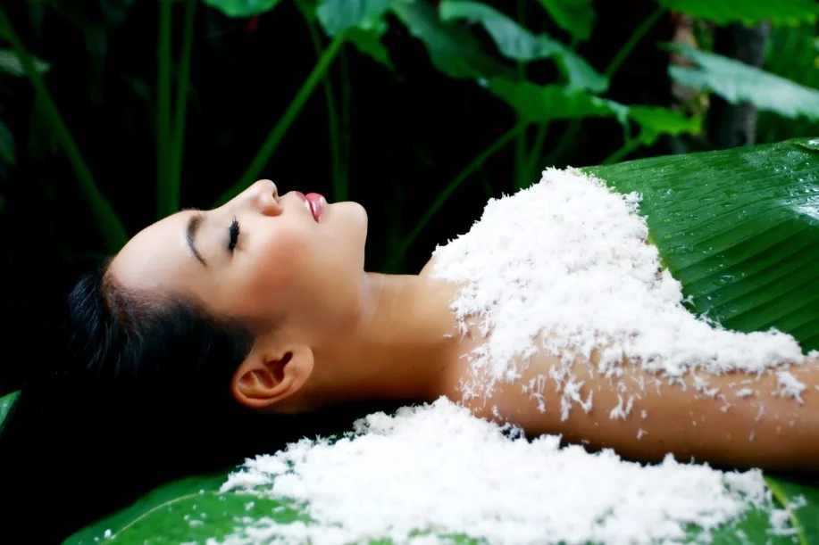
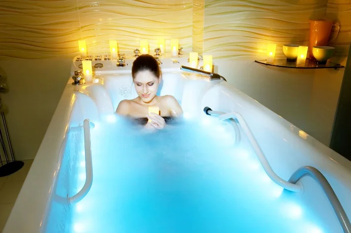
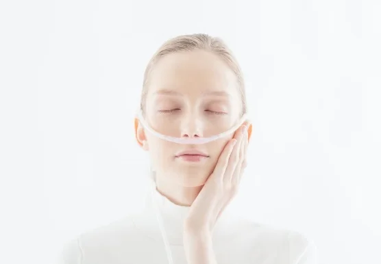
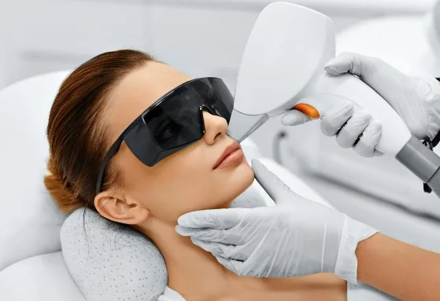
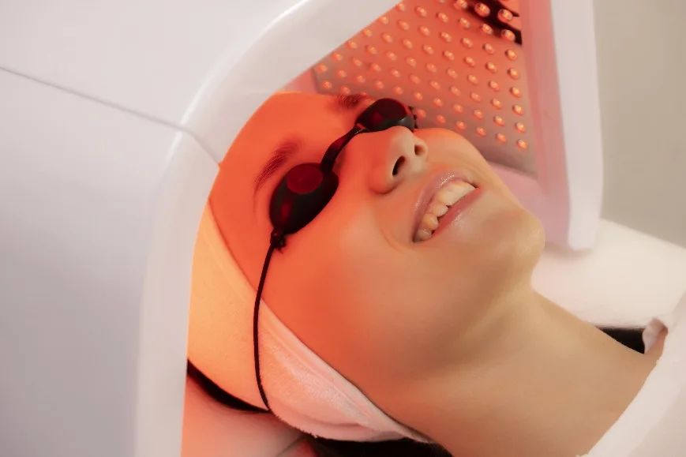

Институт Традиционной Восточной Медицины предлагает уникальную программу с комплексом современных инновационных технологий на основе доказательной медицины в сочетании с методами и традициями народной врачебной практики по профилактике и реабилитации человека с целью омоложения, регенерации и восстановления жизненных сил организма.

Комплекс включает в себя набор диагностических и лечебных мероприятий.
Мониторинг состояния организма:
- Консультация главного врача с анализом данных исследования крови, результатов ультразвукового исследования, составление индивидуального плана лечения.
- Вегето-резонансное исследование организм / КМЭ диагностика
- Комплексная реконструктивная иммунотерапия:
- Забор биоматериала с последующим изготовлением персонализированного препарата из лейкоцитарной массы пациента.
- Насыщение индивидуальных материалов (кетгутовые нити, гомеопатическая крупка, крем) биологически активным препаратом.
- Регенеративная иммунотерапия (косметология, трихология, заболевания суставов, востановление обоняния, регенерация всего организма по биологически активным точкам)
- Имплантация кетгутовых нитей обработанных биологической информацией по биологически активным точкам с целью уменьшения локальных объёмов
- Мезотерапия по биологически активным точкам
- Premium spa-ритуал обёртывание.
- СПА процедуры - Акваторнадо
- Водородотерапия
- Фотодинамическая терапия
- Массаж
Длительность курса – 10 дней.
ДИАГНОСТИКА
Вегетативный резонансный тест - ВРТ
Вегетативный резонансный тест позволяет проводить интегральную оценку состояния здоровья человека, осуществлять топическую диагностику, определять эффективность и переносимость различных гомеопатических средств, подбирать оптимальные режимы и схемы электромагнитных физио- и рефлексотерапевтических воздействий на пациента.
Вегетативно-резонансное тестирование позволяет установить диагноз с точностью до
87%.
ВРТ эффективна для:
- интегральной функциональной оценки состояния органов и систем организма;
- топической диагностики патологического процесса с помощью соответствующих органных препаратов;
- этиологической диагностики с помощью различных нозодов;
- подбора гомеопатических препаратов, их дозы, разведения;
- определения совместимости гомеопатических препаратов при назначении комплекса препаратов;
- определения состояния акупунктурных меридианов, их избыточности или недостаточности.
Показания к проведению исследования ВРТ-диагностики:
• нарушениях уровня сахара, холестерина и гормонов в крови;
• непроходимости маточных труб; женском и мужском бесплодии;
• эндометриозе;
• наличии в организме первичных опухолей;
• наличии различного рода инфекций.
Разрешен к медицинскому применению Минздравом России в 1999 году (методические рекомендации М 98/232).
КМЭ – Медицинский экспертный комплекс
"Комплекс медицинский экспертный" - это интеллектуальная система для анализа состояния здоровья и качества жизни человека, успешно применяемый в нашем центре. КМЭ позволяет практически мгновенно оценить состояние здоровья, выявить заболевание до его проявления, позволяет прогнозировать развитие заболевания, купировать боль и при необходимости рекомендовать оптимальную терапию.
Медицинская компьютерная диагностика на аппарате КМЭ может проводиться по следующим направлениям:
- Органо-тканевая диагностика желудочно-кишечного тракта, сердечно-сосудистой системы, женской мочеполовой системы, ЛОР-органов, нервной системы, костно-суставной системы, бронхо-легочной системы, зубочелюстной системы, органов зрения, молочных желез, внеклеточного матрикса.
- Системная диагностика эндокринной системы, анаболических процессов, катаболических процессов, иммунной системы, психологического статуса.
- Экологическая диагностика вирусов, бактерий, грибов, паразитов, токсинов различного генеза, дисбактериозов.
- Выбор индивидуально-комплементарных средств: аллопатических лекарств, гомеопатических препаратов, трав и фито препаратов, витаминов, микроэлементов.
ЛЕЧЕБНЫЕ ПРОЦЕДУРЫ
Регенеративная (реконструктивная) иммунотерапия
Инъекционное и поверхностное применение сыворотки, обогащенной регенеративными экзовезикулами имеет высокую эффективность в коррекции возрастных изменений с достижением стойкого косметического эффекта омоложения кожи, а также в лечении кожных заболеваний (акне) и в восстановлении волосяного покрова при облысении.
Регенеративная сыворотка может быть получена как от самого пациента, так и от здорового молодого донора. Кровь обладает наибольшим регенеративным потенциалом и может быть эффективно использована для общего оздоровление организма.
Клеточные экзовезикулы способны практически в полной мере воспроизводить иммунологические и регенеративные эффекты продуцирующих их клеток. Разработанная нами технология позволяет получать плазму или сыворотку крови, обогащенную экзовезикулами с заданными иммунобиологическими свойствами. Наша технология активационного стресса обеспечивает мобилизацию регенеративных свойств крови и получение сывороточного препарата с максимально возможной регенеративной активностью. Компонент крови с заданными физическими и иммунобиологическими свойствами (обогащенная регенеративными экзовезикулами сыворотка, фибриновая тромбо-лейкоцитарная пленка, или тромбо-лейкоцитарный концентрат), приготовленный по разработанной технологии, вводится инъекционно в проблемную зону или используется поверхностно. Частота и схема лечения зависят от вида, тяжести и течения заболевания.
Заболевания

Различные возрастные изменения кожи- Заболевания кожи (акне, облысение)
- Остеоартроз
- Травма суставов
- Бурсит
- Заболевания позвоночника (остеохондроз, дорсопатия, протрузия дисков)
- Интерстициальный цистит
- Дегенеративные и воспалительные заболевания органа зрения
- Длительно незаживающие (в том числе послеоперационные) раны
- Поверхностный ожог.
- Глубокие длительно незаживающие раны
- Свищи различного генеза
- Остеомиелит
- Общее оздоровление
Достоинства регенеративной иммунотерапии
- Лечебный эффект компонентов крови основывается на природных механизмах, воздействующих на разные иммунологические звенья и способных оказывать многофакторное, эволюционно выверенное воздействие на регенеративный процесс.
- Использование донорской плазмы или сыворотки не требует совместимости донора и реципиента по антигенам главного комплекса гистосовместимости.
- Малая инвазивность лечения, отсутствие токсичности и серьезных побочных эффектов.
- Достижение устойчивого (длительного) клинического эффекта у подавляющего большинства пациентов.
- Широкие возможности комбинирования с другими методами лечения.
Имплантация кетгутовых нитей,обработанных биологической информацией, на проблемные зоны
Кетгут-терапия - это революционный метод работы с проблемными зонами тела, заключающийся не только в подтяжке кожи, избавлении от лишнего веса, но и настройки правильной работы внутренних органов. Суть процедуры заключается в том, что под кожу имплантируются саморассасывающиеся нити, которые состоят из протеина, в проблемные зоны пациента. Спустя несколько недель нити растворяются, тем самым запуская иммунную реакцию организма. Введение нити производится с помощью тонких одноразовых игл в акупунктурные точки. В течение длительного периода после процедуры, организм самостоятельно начинает восстановление и избавляется от лишнего веса.

Premium spa-ритуал обёртывание с красной икрой и молокой с трансдермальным глубоким введением в слои кожи аппаратом Фомотек
Это эксклюзивный комплекс лифтинг-процедур на основе уникального тонизирующего потенциала икры и молоки осетровых рыб, натуральных биопептидов и соли из Мертвого моря. Фантастический и инновационный spa-уход трансформирует кожу, делая ее подтянутой и упругой, атласной на вид, разглаживает мелкие морщины, обеспечивая естественное сияние и насыщает зрелую кожу энергией молодости. И в этом нет ничего удивительного, ведь икра и молока – настоящий кладезь полезных Омега-3 жирных кислот, витаминов, протеинов и минеральных веществ.

Акваторнадо со светотерапией
Аппаратный комплекс «АкваТорнадо» - это инновационное сочетание высокого давления воды и вакуума, с возможностью поверхностных инъекций, в водной среде, которое дает мощный эффект реконструкции структуры кожи её омоложения, а также корректирует контуры тела, убирает целлюлит, подтягивает дряблую кожу тела и лица, воздействует на все внутренние системы жизнедеятельности человека. Выраженный лимфодренаж и проработка глубоких слоёв мышц за счёт высокого давления воды и вакуума с возможностью поверхностных инъекций в водной среде, благодаря чему достигается безболезненный и мощный косметологический и лечебный эффект, заметный уже с первой процедуры!Сочетается с новыми технологиями светотерапии.

Водородотерапия с дополнительным обогащением сосудов головы и шеи через слизистую оболочку глаз с использованием бинокулярных технологий
Ингаляции атомарного водорода или водородная терапия – инновационная японская технология
Водородная терапия кроме антиоксидантного эффекта оказывает:
- иммуномодулирующее действие (повышает сопротивляемость организма к различным инфекциям, в том числе и вирусным);
- противовоспалительное (достоверно показано уменьшение воспалительных изменений в органах и тканях с лабораторным подтверждением – снижение маркеров воспаления СРБ, интерлейкина-6, ферритина, мочевой кислоты);
- ангиопротекторное (улучшение состояния сосудов, повышение эластичности сосудистой стенки);
- оздоравливающее (водородная терапия запускает восстановительные процессы в тканях и органах на клеточном уровне);
- омолаживающее (увеличение выработки коллагена);
- anti-age эффект (замедление процессов старения).


Фотодинамическая терапия с использованием натурального хлорофила!
Фотодинамическая терапия (ФДТ) - сравнительно новый перспективный метод лечения заболеваний, основанный на сочетании фотомодифицирующего или фототоксического эффекта препарата (токсического действия на клетку при взаимодействии со светом) с его накоплением преимущественно в патологически измененной ткани.
Представляет собой лечение с применением светового излучения с заданными параметрами. Особенность ФДТ состоит в том, что для усиления воздействия света используют специальные вещества – фотосенсибилизатор. Суть метода заключается во введении в организм пациента фотосенсибилизатора. Данное вещество накапливается преимущественно в патологически измененных тканях. Выделение атомарного кислорода во всех сосудах организма снижает патогенную нагрузку.
ФДТ оказывает комплексное воздействие на организм человека. В результате лечения повышается сопротивляемость организма, уничтожаются вирусы, бактерии и грибки.
Преимущества метода с точки зрения косметологии:
- Неинвазивность и простота применения.
- Результат (эффект) виден сразу.
- Устранение патологических клеток.
- Активация роста молодых, здоровых клеточных структур.
- Нормализация естественных обменных процессов и механизмов деления клеток.
- Активация синтеза коллагена и эластина.
- Минимальное число противопоказаний и отсутствие периода реабилитации.
- Занимает мало места.
- Отсутствие системного воздействия.
- Возможность многократного повторения.
- Отсутствие побочных эффектов, повреждений и болевых ощущений.
- Визуальная экспресс-диагностика новообразований кожи и быстрая терапия.
- Высокая экономическая эффективность.
- Вегетарианцам и веганам можно.
- Детям можно.
Фотодинамическая терапия является высокоэффективной щадящей процедурой и применяется в сочетании с различными методами терапии и косметологии.

Иммунологический и регенеративный потенциал здорового организма может быть использован для своевременного эффективного лечения и продления жизни людей с разной патологией.
Материалы института: itvm.ru ↗ · Информация на 26 октября 2026 года.